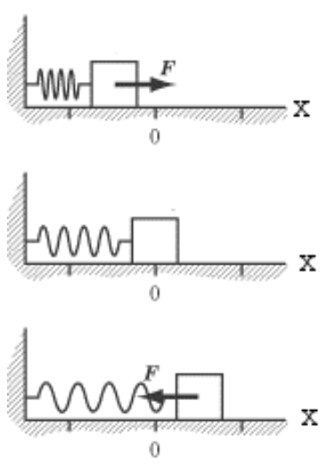
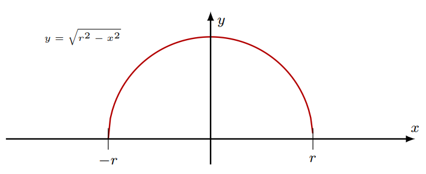

Calculus 2 - Integration Midterm
Easy Problems
[C] Warmup
For each of the following two integrals, determine the appropriate strategy and solve.
[T] Choosing Strategies
For this question, we will reflect upon the process for solving an integral.
- What should we do before we begin solving an integral?
- When should we use u-substitution?
- When should we use trig substitution?
- When should we use partial fractions?
- When should we use integration by parts?
- Describe a process for solving an integral.
[A] Work and Forces
Background
Recall that for an object, if the force applied is in the same direction as its displacement, then the work done by the force is given by:
We will use this formula to evaluate the work done by a spring. To do so, we need Hooke's Law, which states that \(F_{spring} = -kx\), where \(k\) is the stiffness of the spring and \(x\) is the displacement of its ends from equilibrium. To get a visual understanding of how springs work again, consider the diagram below:

For all of these questions, we will assume that the spring is ideal - the spring will have no mass, weight, or damping losses. The spring will have \(k = 100 \hspace{0.2cm} N/m\).
Questions
a) Calculate the work required to compress the spring by 2 cm.
b) Assume that the spring has been compressed by 3cm. How much work is performed between the time it is released up to point where it is only compressed by 1cm?
c) How much work is done by \(F_{spring}\) if a spring goes from the maximum point of compression to the maximum point of stretching?
Medium Problems
[C] Keep Practicing
For each of the following two integrals, determine the appropriate strategy and solve.
[T] Properties of Integrals
Determine whether or not each equation is a property of integrals. If it is not a valid property, make any necessary fixes to make it valid.
[A] Waiting at the Counter
Background
Recall in probability that a continuous random variable \(X\) is a type of random variable that can take any real number. The function that calculates the probability of \(X\) lying between values \(a\) and \(b\) (where \(a\) and \(b\) are possible quantitative outcomes) is given by:
For this problem, we will be looking at exponential distributions, which can model the waiting time of a person in a line. The probability density function of an exponential distribution is:
where \(\lambda\) is the distribution rate. For this problem, you will be analyzing a waiting line at a counter, with \(\lambda = \frac{1}{10}\). This will have exponential distribution as stated above.
For question 2, you will need to know the formula for the mean, \(\mu\), which is given by:
Questions
- Determine \(P = (X \geq 6)\), the probability that a person will wait in this line for 6 minutes
- Determine \(\mu\), the average waiting time at this counter
Hard Problems
[C] Integration Toolbox
For each of the following three integrals, determine the appropriate strategy and solve.
[A] Revisiting Circles
Background
Note that the equation of a circle with the origin located at \((0,0)\) is given by:
It is possible to derive both the area and circumference of a circle from this equation only using integral calculus, but it requires spliting the circle into its upper (\(y \geq 0\)) and lower (\(y<0\)) counterparts and then integrating on \(x\). This is known as the semicircle method.

For reference, the arc length of a curve \(f(x)\) between \(a\) and \(b\) is given by:
Questions
a) Prove that \(A_{circle} = \pi r^2\) using the semicircle method.
b) Prove that \(C = 2\pi r\) using the semicircle method.